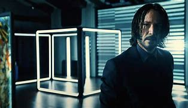
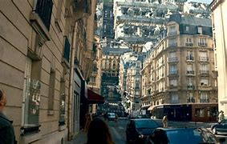
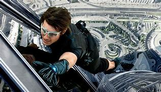
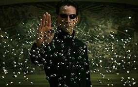

John WickHistória gira em torno de John Wick (Keanu Reeves), um ex-assassino de elite que se retirou do mundo do crime para viver em paz após o falecimento de sua esposa. Ela deixa para ele um último presente: Daisy, uma cachorrinha que representa um vínculo com seu amor e uma maneira de lidar com o luto. Porém, sua vida tranquila é destruída quando um grupo de criminosos russos, liderados pelo impulsivo Iosef Tarasov (Alfie Allen), invade sua casa, rouba seu carro e, cruelmente, mata Daisy. O que eles não sabiam é que John Wick era uma lenda no submundo do crime, conhecido por sua habilidade implacável e por nunca deixar inimigos vivos. Consumido pela sede de vingança e decidido a punir os responsáveis, John retorna ao submundo que havia deixado para trás. Ele entra em um caminho de violência e vingança, enfrentando a máfia russa liderada por Viggo Tarasov (Michael Nyqvist), pai de Iosef, que conhece muito bem a fama e a letalidade de Wick. A narrativa se desenrola em meio a combates intensos e cenas de ação estilizadas, com John utilizando suas habilidades em artes marciais e tiro para eliminar todos que ficam em seu caminho. John Wick explora um mundo sombrio, com códigos de honra e organizações criminosas sofisticadas, como o Hotel Continental, um refúgio para assassinos. |
OrigemEspecialista em extrair segredos do subconsciente das pessoas enquanto elas estão sonhando. Ele é contratado para realizar um trabalho único e aparentemente impossível: uma “inception”, ou inserção. Ao invés de roubar uma ideia, ele deve implantar uma ideia na mente de seu alvo, Robert Fischer, herdeiro de um império de negócios, de forma tão sutil que ele acredite ser uma ideia própria. Para realizar essa tarefa, Cobb monta uma equipe de especialistas, incluindo Arthur, seu braço direito; Ariadne, uma talentosa arquiteta de sonhos; Eames (Tom Hardy), um mestre em disfarces; e Yusuf (Dileep Rao), um químico responsável por criar um potente sedativo. A missão é complexa e perigosa, pois para implantar a ideia, eles precisarão entrar em múltiplos níveis de sonho, onde cada camada do subconsciente apresenta novos riscos e desafios. À medida que o grupo mergulha nas camadas mais profundas dos sonhos, a linha entre a realidade e a ilusão começa a se desfazer, especialmente para Cobb, que é atormentado por lembranças de sua esposa falecida, Mal (Marion Cotillard). Seus traumas pessoais ameaçam não apenas o sucesso da missão, mas também a vida de toda a equipe, uma vez que qualquer erro pode deixá-los presos permanentemente no subconsciente. |
Missão ImpossívelAgente talentoso da IMF (Impossible Mission Force), uma organização secreta dedicada a proteger a segurança global através de missões arriscadas e operações secretas. Durante uma missão em Praga, sua equipe é encarregada de impedir o roubo de uma lista secreta que contém as identidades dos agentes disfarçados ao redor do mundo. No entanto, a operação dá terrivelmente errado e resulta na morte de quase todos os membros de sua equipe. Hunt é acusado de ser um agente duplo e de trair a organização. Determinado a limpar seu nome, ele se torna um fugitivo e precisa descobrir quem realmente o incriminou. Para isso, ele une forças com outros agentes que também estão à margem, incluindo Luther Stickell (Ving Rhames), um especialista em tecnologia, e Claire Phelps (Emmanuelle Béart), esposa de seu mentor. Juntos, eles elaboram um plano ousado para roubar a lista original, evitando assim que ela caia em mãos erradas e, ao mesmo tempo, tentando desmascarar o verdadeiro traidor dentro da IMF. Com sequências icônicas de suspense e ação, como a famosa cena em que Ethan desce suspenso por cabos dentro de uma sala protegida por um sistema de segurança impenetrável. O filme redefiniu o gênero de espionagem com sua mistura de tensão, engenhosidade e coreografias de ação. |
MatrixThomas Anderson, um programador de computadores que leva uma vida dupla como o hacker "Neo". Ele sente que há algo estranho em sua realidade e está atormentado por mensagens misteriosas que o levam a questionar o mundo ao seu redor. Neo acaba encontrando Morpheus (Laurence Fishburne), um líder rebelde procurado pela polícia, que lhe oferece a chance de descobrir a verdade sobre sua existência. Ao aceitar a pílula vermelha oferecida por Morpheus, Neo é despertado para uma chocante realidade: o mundo que ele conhece é, na verdade, uma simulação chamada Matrix, criada por máquinas inteligentes que escravizaram a humanidade e usam seus corpos como fonte de energia, mantendo suas mentes presas em um mundo virtual. No mundo real, Neo se junta a uma resistência composta por humanos livres que lutam para derrubar a Matrix e libertar a humanidade. Eles são constantemente perseguidos por agentes da Matrix, incluindo o implacável Agente Smith (Hugo Weaving), um programa de inteligência artificial determinado a manter a ordem. À medida que Neo treina com Morpheus e Trinity (Carrie-Anne Moss), ele começa a descobrir seus poderes dentro da Matrix e sua habilidade de manipular as leis da física. Morpheus acredita que Neo é "O Escolhido", um ser profetizado que trará o fim do domínio das máquinas. |
|---|